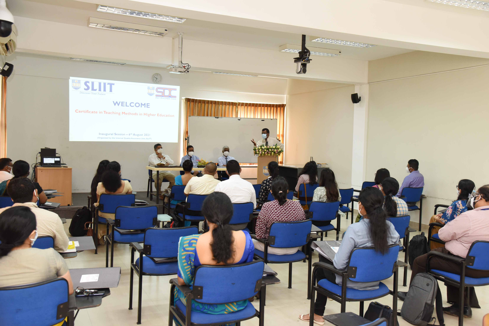
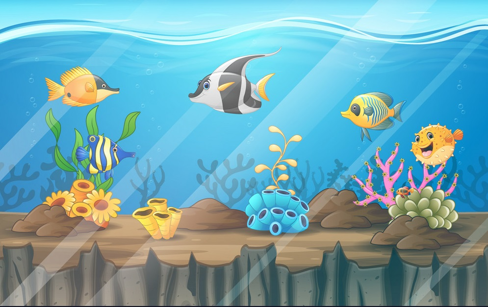
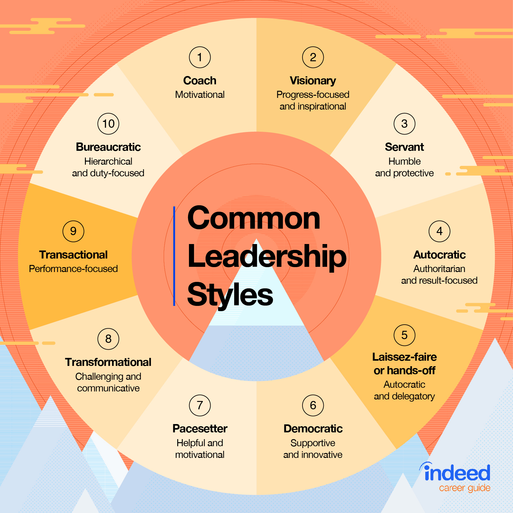
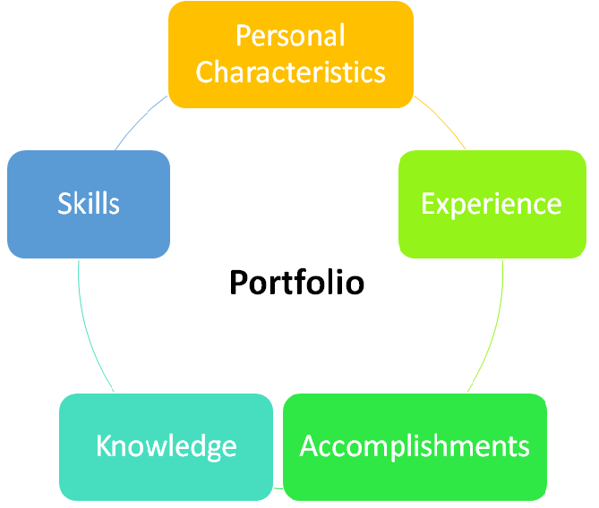

Introduction
As an academic, it is important to develop the teaching, professional, personal, and social skills to ensure that we deliver high-quality educations to the students as per their needs.
Staff development program conducted by Academic Development and Quality Assurance Unit at Sri Lanka Institute of Information Technology covers various aspects of these basic skills required for an academic.
This course was developed by Prof. Colin, who been serving the educational sector of Sri Lanka for over 31+ years, especially focusing on uplifting the quality of education in local and international Universities.

I participarted in the 6th SDP along of 30 other staff members from various disciplines of SLIIT.
The program was conducted over nearly five months covering various important topics.
The inaugration of the course was successfully held on August 6th of 2021 following 18 interesting sessions delivered by number of valuable resources persons in Sri Lanka.
Session were conducted on Fridays from morning 9 AM to 4.30 PM.
I sincerely thank Prof. Colin for oragnizing this session, SLIIT administration for this valuable opportunity and all the resource personals for their time and guidance.
I also thank all the participants of 6th SDP for the support and meaningful disucssions.
This article discusses my reflection on the 6th SDP on various topics delivered.
1. Teaching and Learning
Teaching and Learning category of this course covers range of aspects related to class room teaching from managing the students at the class to using technology effectively for delivery.
Classroom Management
This session was conducted on the very first day of the course by
Prof. Udit Jayalath.
Prof. Udith Jayasinghe is the Vice-Chancellor of the Wayamba University of Sri Lanka (WUSL). He serves as the Senior Professor and the Chair of Dept. of Agribusiness Management, Faculty of Agriculture & Plantation Management of WUSL.
4H Model
The initial discussion was centered on understanding the 4H model that reflects four different categories of skills required for a teacher. The four important categories are head, heart, hand, and health, and they are further capitalized into a set of skills. It is very important that we focus on improving all four skills and lacking one skill would result in poor quality in the delivery as all four groups of skills are interrelated.

Managing Different Types of Students
Similar to a fish tank which is generally composed of various types of fish, a classroom is also composed of various types of students.
Prof. Udit shared an interesting example of comparing different types of fish with different types of students in the classroom.
There will be usually trouble-making students like the "Piranha fish". These students are hard to manage and create problems during the class.
The next category of students is those who are good and go without the flow of the entire class.
This kind of student can
be compared with the "Catfish". The final category of students is similar to "Goldfish" which everyone likes to have. This group of
students are highly motivated and the teacher wishes to have "Goldfish" types of students in the class. But in reality this never happens and
generally, a class is composed of all three kinds of students. The teacher must handle all three kinds of students according
to their nature and make the other two groups of students as "Goldfish".
Building Leadership Qualities

Leadership qualities required for an academic were discussed by Prof. Nagalingam Nagendrakumar.
He is an Associate Dean, attached to the Business School of SLIIT.
The discussion was centered on the key leadership skills that we should poses as an academic including the ability to empower others,
motivating a set of groups to achieve a goal, nurturing and enhancing the surroundings, and careful influence on others.
Also, he highlighted that it is important that we convey messages positively as a leader to maintain good relationships in our working environment.
Further, it was discussed that as a leader, careful use of power, understanding and inspiring others and, our behaviors are too important to become a successful leader.
Finally, we analyzed different kinds of leaders, as well mapping our leadership skills with the existing leader types.
With this analysis, I could notice that I pose behaviors of multiple types of leaders including Decisiveness.
For example, being supportive as a "Coach", being strategic as a "Visionary Leader", having self-confidence as an "Autocratic Leader" etc.
This is self-analysis was helpful in understanding what kind of leaders we are and how can the other skills can be improved.
Motivation of Students
Motivating students is one of the key factors for successful learning. This valuable session was conducted by Prof. Udit Jayasinghe.
The initial discussions were oriented on analyzing different strategies that we use to motivate the students during the class.
A bunch of techniques was proposed by the entire class including, giving positive feedback, offering rewards, keeping positive competitions,
giving students responsibility, teamwork, setting achievable goals, expressing our interest in their growth, and sharing success stories.
The main takeaway of the discussion was, there are two types of motivations, extrinsic and intrinsic, which are controlled by the external
and internal factors respectively. So we must achieve both while motivating the students. Prof. Udit further highlighted,
the behavior of the teacher, structure of the course, our assessing methods, our information interactions with the students, and our
teaching styles, all affect the motivation of the students. Therefore we must focus on improving these five key aspects
to motivate the students for better learning.
Teaching and Learning Methods
Portfolio Development

In any profession, maintaining our portfolio is important to showcase our talents and achievements for greater opportunities.
Especially, as an academic it is a key factor for our career growth and self-reflection on what we have done, what we are doing and
what we want to do. This important session was carried out by Prof. Sriyani Peiris, who is serving as the Head of Science and Education
department, Faculty of Humanities at SLIIT. Her 31+ years of service to the Agriculture higher education of Sri Lanka itself indicates
that no better person can discuss maintaining a portfolio for a successful carrier path.
She mainly highlighted that there are different kinds of portfolios, personal, career, employment, and assessment and it is important that we
maintain our career portfolio to highlight our skills and abilities.
This portfolio should reflect PEAKS, Personal characteristics, Experience
Accomplishments, Knowledge, and Skills. Also, we must reflect on our portfolio by analyzing it often to learn from our portfolio,
plan from the learnings and act accordingly.
Innovative and Interactive Teaching Methods
Lesson Planning
Effective use of Technology
2. Assessment and Evaluation
3. Curriculum Development
Outcome-based Education
4. Orientation as a Teacher
5. Research in the life of an academic
5. Personal Development
Reflective Practice
Emotional Intelligence
Stress Management
Need for Counselling
Time Management